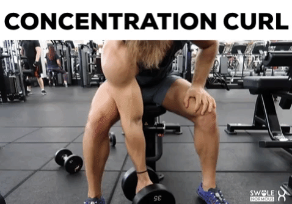

Sit down on a flat bench with one dumbbell in front of you between your legs. Your legs should be spread with your knees bent and feet on the floor.
Use your right arm to pick the dumbbell up. Place the back of your right upper arm on the top of your inner right thigh. Rotate the palm of your hand until it is facing forward away from your thigh. Tip: Your arm should be extended and the dumbbell should be above the floor. This will be your starting position.
While holding the upper arm stationary, curl the weights forward while contracting the biceps as you breathe out. Only the forearms should move. Continue the movement until your biceps are fully contracted and the dumbbells are at shoulder level. Tip: At the top of the movement make sure that the little finger of your arm is higher than your thumb. This guarantees a good contraction. Hold the contracted position for a second as you squeeze the biceps.
Slowly begin to bring the dumbbells back to starting position as your breathe in. Caution: Avoid swinging motions at any time.
Repeat for the recommended amount of repetitions. Then repeat the movement with the left arm.